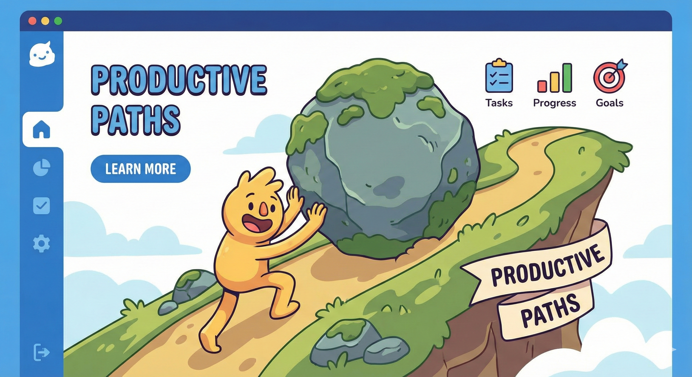

introduction about DISCIPLINEDDISCIPLINED is a student-built platform created to help learners grow through structure, consistency, and intentional practice. It’s a calm space where studying becomes clearer, progress becomes measurable, and personal growth becomes achievable. 
|
Purpose of the PlatformHere, you’ll find everything that builds disciplined learning in one place — books, tools, apps, videos, and guidance that help you stay organized, avoid distractions, and improve your productivity. Each resource is chosen to strengthen your habits and make studying easier and clearer.  |
Benefits of Using DISCIPLINED
|